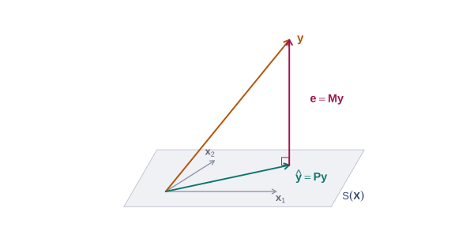
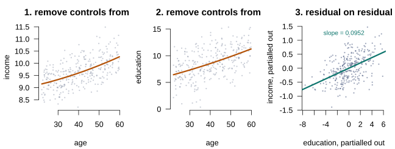

The Algebra and Geometry of Least Squares
Lecture 3
0.1 Where we are
Where this lecture sits
DGPIdentificationEstimationAsymptoticsInference
Computation
Identification was settled last lecture: under A2 the parameter \(\bbeta\) is determined by the population, and under A3 it is the conditional expectation we wanted. We now assume both and move to the second question — how to construct an estimate.
Inference is not touched here at all. Neither, in fact, is statistics.
From population to sample
Lecture 2 ended with a population object: the projection coefficient \(\bbeta = \bQ_{xx}^{-1}\E[\mathbf{x}y]\), identified under two finite moments and no collinearity. We never observe it, because we never observe \(F\).
This lecture is entirely about the sample, and it is worth saying plainly what that means: nothing here is statistical. No expectations, no distributions, no assumptions about how the data were generated. We ask a purely algebraic question — given a matrix \(\bX\) and a vector \(\bY\), which \(\mathbf{b}\) makes \(\bX\mathbf{b}\) closest to \(\bY\)? — and then follow the answer into geometry.
Everything below holds for any data matrix of full column rank. Whether the resulting \(\mathbf{b}\) tells us anything about \(\bbeta\) is the question of Lecture 4.
0.2 The least squares problem
Choosing a fitting criterion
To make “closest” precise we need a criterion. Least squares takes the sum of squared deviations, which has the twin merits of penalising large errors heavily and yielding a solution in closed form.
Define the residuals \(e_i = y_i - \mathbf{x}_i'\mathbf{b}\), or in stacked form \(\be = \bY - \bX\mathbf{b}\). Before going further, one distinction must be firm:
Warning
\(\be\) is the residual — observable, and a function of whichever \(\mathbf{b}\) we choose. \(\beps\) is the disturbance — unobservable, a feature of the DGP.
Both \(y_i = \mathbf{x}_i'\bbeta + \varepsilon_i\) and \(y_i = \mathbf{x}_i'\mathbf{b} + e_i\) are true, and they say entirely different things.
Deriving the estimator
With the criterion fixed, the derivation is short. Minimise \[S(\mathbf{b}) = \be'\be = \bY'\bY - 2\bY'\bX\mathbf{b} + \mathbf{b}'\bX'\bX\mathbf{b}.\]
The first-order condition gives the normal equations, \[\frac{\partial S}{\partial \mathbf{b}} = -2\bX'\bY + 2\bX'\bX\mathbf{b} = \bzero \quad\Longrightarrow\quad \bX'\bX\mathbf{b} = \bX'\bY,\] and A2 makes \(\bX'\bX\) invertible, so \[\boxed{\;\bb = (\bX'\bX)^{-1}\bX'\bY\;}\]
The Hessian \(2\bX'\bX\) is positive definite, confirming a minimum rather than a maximum.
Reading the normal equations
The formula for \(\bb\) is what gets memorised, but the normal equations in their raw form say something more interesting. Rewrite them as \(\bX'(\bY - \bX\bb) = \bX'\be = \bzero\) and read the pieces:
\[\eqt{a}{\bX'}\eqt{b}{(\bY - \bX\bb)} = \eqt{c}{\bX'\be} = \bzero\]
a
Every column of \(\bX\) in turn: the condition holds separately for each regressor, \(\mathbf{x}_k'\be = 0\) for \(k = 1,\dots,K\).
b
The residual vector — whatever the fit fails to explain.
c
The residuals are orthogonal to every regressor. Not approximately, and not on average across samples: exactly, by construction, in the sample you have.
The same equation, one lecture earlier
Divide the normal equations by \(n\) and they read \(n^{-1}\sum_i \mathbf{x}_i e_i = \bzero\) — which is the sample counterpart of the population condition \(\E[\mathbf{x}e] = \bzero\) we met in Lecture 2.
That correspondence is not a coincidence. Least squares is the method of moments applied to the projection condition: replace a population expectation by its sample average and solve. We will not need this reading until Lecture 12, but it is already true here, and it is why the same asymptotic argument will eventually serve OLS, IV and GMM alike.
Two consequences that come for free
Write the first column of \(\bX\) as \(\mathbf{x}_1 \equiv \mathbf{i}\), a vector of ones. Then \(\mathbf{i}'\be = 0\), which delivers two familiar facts at once: the residuals sum to zero, \(\sum_i e_i = 0\); and the regression hyperplane passes through the point of means, \(\bar{y} = \bar{\mathbf{x}}'\bb\).
Both are consequences of the intercept, not of least squares as such — neither survives in a regression without a constant term, and much of what follows, including the usual \(R^2\), quietly assumes one is present.
0.3 Projection and the residual maker
Two matrices worth naming
Substituting \(\bb\) back into \(\be = \bY - \bX\bb\) gives \[\be = \big(\bI - \bX(\bX'\bX)^{-1}\bX'\big)\bY = \bM\bY,\] so the residuals are a fixed linear transformation of \(\bY\). The same is true of the fitted values. Both transformations are used constantly enough to deserve names.
Definition 1 (Projection matrix and residual maker) \[\bP = \bX(\bX'\bX)^{-1}\bX', \qquad \bM = \bI_n - \bP\]
\(\bP\bY = \hat{\bY}\) returns the fitted values from a regression on \(\bX\); \(\bM\bY = \be\) returns the residuals.
Their properties, and why they matter
Almost everything in this lecture is a corollary of the following list. It is worth learning it as a list, because each item will be used without comment later.
Theorem 1 (Properties of \(\bP\) and \(\bM\))
- Both are symmetric: \(\bP' = \bP\), \(\bM' = \bM\)
- Both are idempotent: \(\bP\bP = \bP\), \(\bM\bM = \bM\)
- \(\bP\bX = \bX\) and \(\bM\bX = \bzero\)
- They are orthogonal: \(\bP\bM = \bM\bP = \bzero\)
- \(\rank(\bP) = K\) and \(\rank(\bM) = n - K\)
Proof. Symmetry is immediate. Idempotency follows from the inner \(\bX'\bX(\bX'\bX)^{-1}\) collapsing to \(\bI\); (3) and (4) are then one line each. For the ranks, an idempotent matrix has rank equal to its trace, and \(\tr(\bP) = \tr(\bI_K) = K\). \(\square\)
The orthogonal decomposition
Property 4 has an immediate consequence that is really the whole lecture in one line: \[\bY = \bP\bY + \bM\bY = \hat{\bY} + \be, \qquad \hat{\bY}'\be = \bY'\bP\bM\bY = 0.\]
Least squares splits \(\bY\) into two pieces that are orthogonal to each other — the part lying in the column space of \(\bX\), and the part lying at right angles to it.
Said geometrically: the column space \(\mathcal{S}(\bX)\), the set of all vectors expressible as \(\bX\mathbf{b}\), is a \(K\)-dimensional subspace of \(\mathbb{R}^n\). The vector \(\bY\) generally does not lie in it. Least squares finds the point of \(\mathcal{S}(\bX)\) nearest to \(\bY\) in Euclidean distance, and that point is the orthogonal projection — the foot of the perpendicular dropped from \(\bY\) onto the subspace.
Every algebraic result in this lecture restates that picture.
The picture
0.4 Partitioned regression
The question controls raise
In most applications only some regressors are of interest and the rest are there to hold something constant — recall the returns-to-education example, where age and its square are present only so that the education coefficient means something.
That raises a natural question: is there an expression for the coefficients of interest alone, one that shows explicitly what the controls are doing?
Partition \(\bX = [\bX_1 \;\; \bX_2]\), so that \(\bY = \bX_1\bbeta_1 + \bX_2\bbeta_2 + \beps\), and write out the normal equations in blocks: \[\begin{bmatrix} \bX_1'\bX_1 & \bX_1'\bX_2 \\ \bX_2'\bX_1 & \bX_2'\bX_2 \end{bmatrix} \begin{bmatrix} \bb_1 \\ \bb_2 \end{bmatrix} = \begin{bmatrix} \bX_1'\bY \\ \bX_2'\bY \end{bmatrix}.\]
The easy case first
Solving the first block gives \(\bb_1 = (\bX_1'\bX_1)^{-1}\bX_1'(\bY - \bX_2\bb_2)\), which still involves \(\bb_2\). But suppose the two blocks happen to be orthogonal.
Theorem 2 (Orthogonal partitioned regression) If \(\bX_1'\bX_2 = \bzero\), then \(\bb_1 = (\bX_1'\bX_1)^{-1}\bX_1'\bY\) and \(\bb_2 = (\bX_2'\bX_2)^{-1}\bX_2'\bY\): each subvector is obtained by regressing \(\bY\) on that block alone.
This is the case in which controls do not matter — if they are orthogonal to the variable of interest, including them changes nothing. It is also, in observational data, essentially never the case. The general result is the next theorem, and it is the most useful identity in the course.
Frisch-Waugh-Lovell
Theorem 3 (Frisch-Waugh-Lovell) Let \(\bM_1 = \bI - \bX_1(\bX_1'\bX_1)^{-1}\bX_1'\). Then \[\bb_2 = (\bX_2'\bM_1\bX_2)^{-1}\bX_2'\bM_1\bY,\] which, writing \(\bX_2^* = \bM_1\bX_2\) and \(\bY^* = \bM_1\bY\), is just \(\bb_2 = (\bX_2^{*\prime}\bX_2^{*})^{-1}\bX_2^{*\prime}\bY^{*}\).
On the Board
Derived on the board. The skeleton:
Proof. Substitute \(\bb_1\) from the first block into the second and collect terms in \(\bb_2\); the projector \(\bP_1\) assembles itself, giving \(\bX_2'(\bI - \bP_1)\bX_2\,\bb_2 = \bX_2'(\bI - \bP_1)\bY\). A2 gives invertibility, and idempotency of \(\bM_1\) gives the second form. \(\square\)
What the theorem says in words
Two questions answer themselves once you look at the pieces. \(\bM_1\bX_2\) is the residual from regressing \(\bX_2\) on the controls — the part of \(\bX_2\) the controls cannot explain. \(\bM_1\bY\) is the same operation applied to \(\bY\).
Important
A multiple regression coefficient is a simple regression coefficient on partialled-out data.
\(\bb_2\) uses only the variation in \(\bX_2\) that is orthogonal to the controls. That is what “holding other things constant” means, operationally.
The three-step recipe
Example 1 (Returns to education) For \(\text{Income}_i = \beta_1 + \beta_2\,\text{educ}_i + \beta_3\,\text{age}_i + \beta_4\,\text{age}_i^2 + \varepsilon_i\):
- Regress Income on \((1, \text{age}, \text{age}^2)\) and keep the residuals \(\mathbf{r}_1\)
- Regress educ on the same controls and keep the residuals \(\mathbf{r}_2\)
- Regress \(\mathbf{r}_1\) on \(\mathbf{r}_2\) — the slope is exactly \(b_2\)
FWL in three pictures

The first two panels throw away everything age can explain. The third regresses what is left of income on what is left of education — and its slope is the multiple regression coefficient, exactly.
Since this is an algebraic identity rather than an approximation, the two routes agree to machine precision:
Code
set.seed(20262)
n <- 300
age <- runif(n, 22, 60)
educ <- 4 + 0.12 * age + rnorm(n, sd = 2.5)
income <- 8 + 0.09 * educ + 0.03 * age - 0.0002 * age^2 + rnorm(n, sd = 0.4)
full <- coef(lm(income ~ educ + age + I(age^2)))[["educ"]]
r1 <- resid(lm(income ~ age + I(age^2)))
r2 <- resid(lm(educ ~ age + I(age^2)))
fwl <- coef(lm(r1 ~ r2))[["r2"]]
c(multiple = full, fwl = fwl, difference = full - fwl)
#> multiple fwl difference
#> 9.522945e-02 9.522945e-02 1.526557e-16Why this matters computationally
Under the Hood—How software absorbs millions of fixed effects
Theorem 3 is what makes high-dimensional fixed effects tractable. Nobody builds a design matrix with a million dummy columns.
Take \(\bX_1\) to be the dummies: only \(\bM_1\bY\) and \(\bM_1\bX_2\) are ever needed, and for dummies that is just within-group demeaning.
When the groups are not nested — worker and firm effects in the same wage regression — the demeaning is applied alternately until convergence. That is the idea behind fixest and reghdfe, and it is why they scale to administrative data a dense design matrix could not hold in memory. We return to it in Lecture 15, where the within transformation turns out to be Theorem 3 once again.
Two corollaries worth having
Corollary 1 (A single extra regressor) In the regression of \(\bY\) on \(\bX\) and one further variable \(\mathbf{z}\), the coefficient on \(\mathbf{z}\) is \[c = \frac{\mathbf{z}'\bM\bY}{\mathbf{z}'\bM\mathbf{z}},\] with \(\bM\) the residual maker for \(\bX\).
Corollary 2 (Partialling out a constant is demeaning) Taking \(\bX_1 = \mathbf{i}\) and writing \(\bM^0\) for the corresponding residual maker, \(\bM^0\mathbf{x} = \mathbf{x} - \mathbf{i}\bar{x}\). Slopes in a regression with an intercept can therefore be computed from data in deviations from means.
\(\bM^0\) is the one-group case of the within transformation, which is how Lecture 15 will begin.
0.5 Goodness of fit
Decomposing the variation
Having split \(\bY\) into fit and residual, it is natural to ask how much of the variation in \(\bY\) the regression accounts for. Variation is measured as deviation from the mean, which is why \(\bM^0\) reappears immediately.
Applying \(\bM^0\) to \(\bY = \bX\bb + \be\) and using \(\bM^0\be = \be\): \[\underbrace{\textstyle\sum_i (y_i - \bar y)^2}_{SST} = \underbrace{\textstyle\sum_i (\hat y_i - \bar y)^2}_{SSR} + \underbrace{\textstyle\sum_i e_i^2}_{SSE}\]
This is the orthogonal decomposition once more, now measured in deviations from means.
\(R^2\), and why it cannot select models
The coefficient of determination is the share of variation accounted for, \[R^2 = \frac{SSR}{SST} = 1 - \frac{\be'\be}{\bY'\bM^0\bY},\] which lies in \([0,1]\) provided the regression has an intercept. Without one, \(SST \neq SSR+SSE\) and the quantity can come out negative.
Theorem 4 (Adding regressors cannot reduce \(R^2\)) Adding any variable to \(\bX\) leaves \(R^2\) unchanged or larger, with equality only if the new coefficient is exactly zero.
Proof. The larger model minimises the same criterion over a superset of the parameter space, so its minimised \(SSE\) cannot be larger; \(SST\) is unchanged. \(\square\)
The adjusted version, and its limits
Because \(R^2\) rewards adding regressors regardless of merit, it is useless for choosing between models. The standard patch imposes a penalty for lost degrees of freedom: \[\bar{R}^2 = 1 - \frac{\be'\be/(n-K)}{\bY'\bM^0\bY/(n-1)} = 1 - \frac{n-1}{n-K}(1 - R^2).\]
Unlike \(R^2\), this can fall when a variable is added — it rises or falls according to whether the gain in fit outweighs the degree of freedom surrendered.
\(\bar{R}^2\) is a mild improvement rather than a solution. It is not a hypothesis test and has no particular decision-theoretic justification. Lecture 6 supplies the tests; Lecture 9 treats model selection properly.
0.6 Transformed regressors
Does reparameterising change anything?
A practical question: if we change units, or rewrite the regressors as combinations of one another, does the regression change?
Two parameterisations of the same model
Example 2 (Two models of Monet’s prices) Model 1: \(\ln P = \beta_1 + \beta_2 \ln W + \beta_3 \ln H + \varepsilon\)
Model 2: \(\ln P = \gamma_1 + \gamma_2 \ln(WH) + \gamma_3 \ln(W/H) + u\)
With \(z_1 = x_1\), \(z_2 = x_2 + x_3\), \(z_3 = x_2 - x_3\), the two designs are related by \(\bZ = \bX\mathbf{P}\) for a nonsingular \(\mathbf{P}\).
Theorem 5 (Invariance under nonsingular transformation) If \(\bZ = \bX\mathbf{P}\) with \(\mathbf{P}\) nonsingular, the regression of \(\bY\) on \(\bZ\) has coefficients \(\mathbf{d} = \mathbf{P}^{-1}\bb\) and produces identical fitted values, residuals and \(R^2\).
Proof. \(\mathbf{d} = (\mathbf{P}'\bX'\bX\mathbf{P})^{-1}\mathbf{P}'\bX'\bY = \mathbf{P}^{-1}\bb\), hence \(\bZ\mathbf{d} = \bX\bb\). \(\square\)
Reparameterisation changes what the coefficients mean, never what the regression explains.
0.7 Computation
Nobody inverts \(\bX'\bX\)
The formula \(\bb = (\bX'\bX)^{-1}\bX'\bY\) is a definition, not an algorithm — and it is a decidedly bad algorithm.
Under the Hood—QR decomposition
Forming \(\bX'\bX\) squares the condition number of \(\bX\), so a design that is merely awkward becomes numerically singular.
R factors \(\bX = \bQ\mathbf{R}\) with \(\bQ\) orthonormal and \(\mathbf{R}\) upper triangular, so the normal equations become \(\mathbf{R}\mathbf{b} = \bQ'\bY\) — a triangular system solved by back-substitution. No inverse is formed and the condition number is never squared.
How much does it cost?
A condition number of \(10^k\) costs roughly \(k\) of the sixteen digits double precision offers. Squaring it can therefore consume the entire budget on a design QR handles without difficulty.
Connection—Where this returns
Lecture 9 treats multicollinearity. Carry forward the point that collinearity is a numerical problem before it is a statistical one — and that large standard errors are revealed by the algorithm, not caused by it.
0.8 Reading
Sources
| Hansen | Chapter 3 — the algebra of least squares |
| Greene | Chapter 3 — projection, FWL, goodness of fit |
| Greene | Appendix E — computation and numerical stability |
In the Literature—Frisch, Waugh and Lovell
Frisch and Waugh (1933) established the result for detrending and Lovell (1963) generalised it to seasonal adjustment. Both were after a practical answer — whether removing a trend before regressing gives the same result as including it — and produced one of the most useful identities in econometrics.
0.9 References
References
Frisch, Ragnar, and Frederick V. Waugh. 1933. “Partial Time Regressions as Compared with Individual Trends.” Econometrica 1 (4): 387–401.
Lovell, Michael C. 1963. “Seasonal Adjustment of Economic Time Series and Multiple Regression Analysis.” Journal of the American Statistical Association 58 (304): 993–1010.